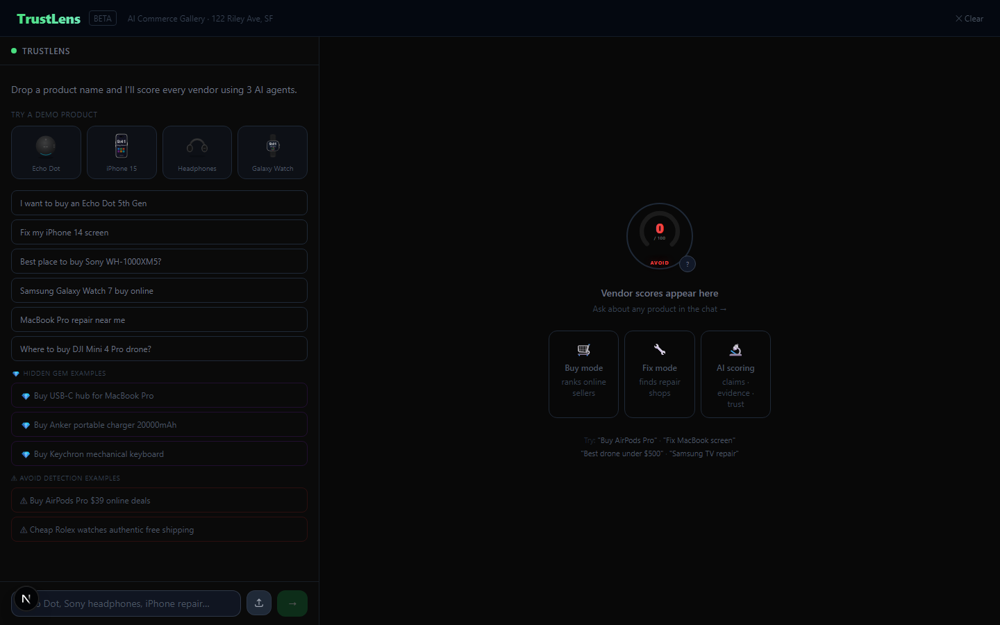
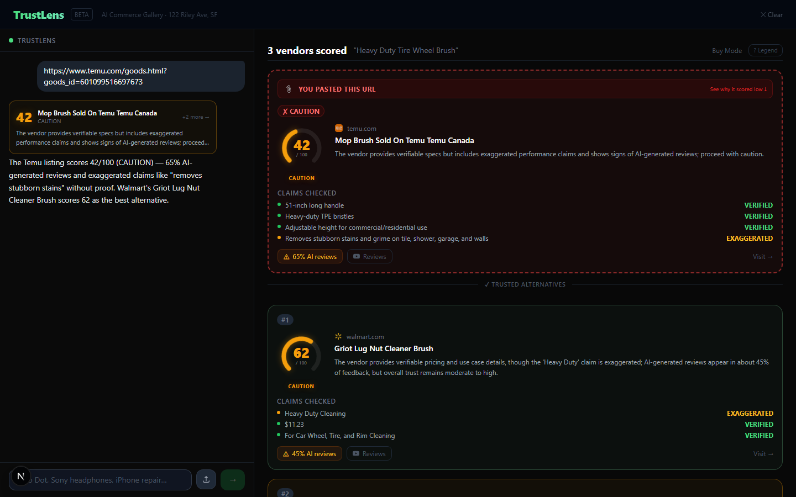
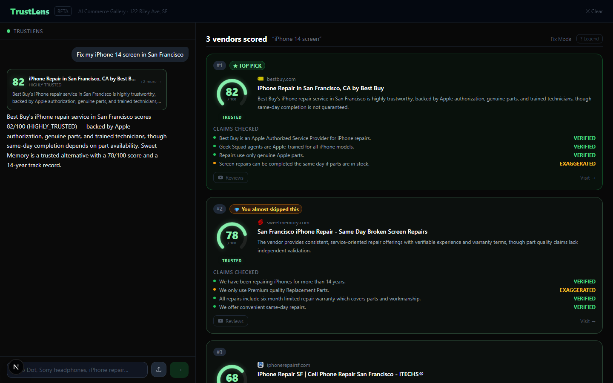
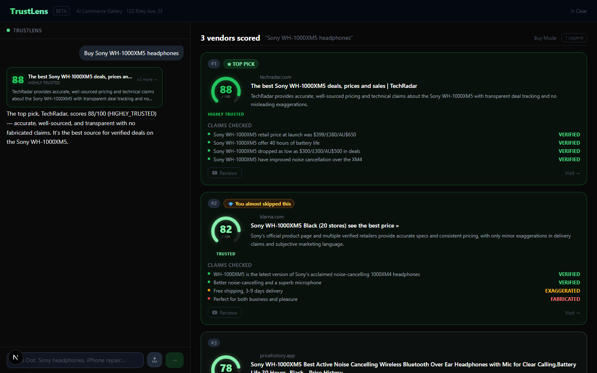
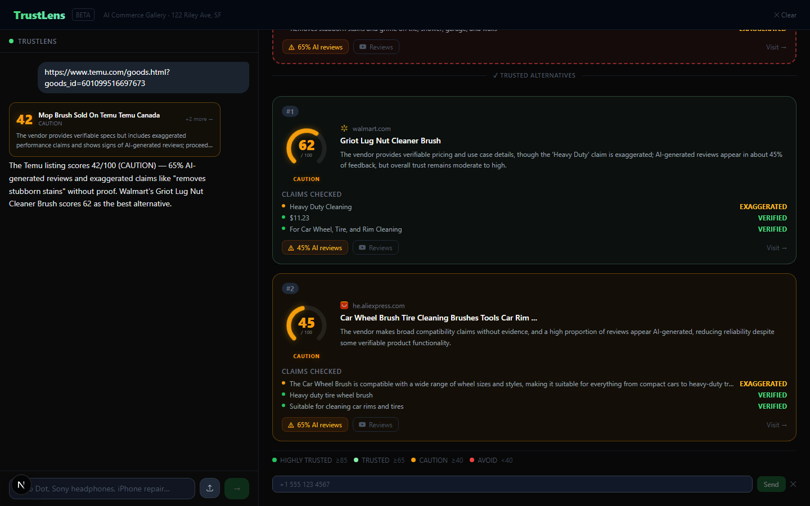

What It Does
Search engines rank vendors by ad spend and relevance. Amazon buries trust signals in thousands of reviews. Temu listings name products that don’t match what ships. TrustLens cuts through all of it: one query, five agents, one honest score.
You type a product name, paste a suspicious URL, or upload a photo of something you want to buy or fix. TrustLens identifies the vendors, pulls real verified-purchase ratios from ZooData’s API (not estimates — actual database flags), and reads every claim the vendor makes, labeling each one VERIFIED EXAGGERATED or FABRICATED. The result is a score from 0–100 with a plain-English verdict.
Buy Mode
Type any product name. TrustLens finds the top vendors, scores them, and ranks by trustworthiness — not by search position or price.
Fix Mode
Type “fix my iPhone 14 cracked screen” and it auto-detects repair mode — finding and scoring repair shops instead of product sellers.
URL Paste
Paste any Temu, AliExpress, or marketplace link. TrustLens scores that specific vendor and surfaces two trusted alternatives to buy from instead.
Photo Upload
Tap the upload button and photograph the product. Novita’s vision API identifies it. From there it runs the full trust pipeline — same as a text search.
Hidden Gem
If a vendor ranked 4th or 5th in search has a TrustScore 30+ points higher than the top result, it gets surfaced separately. The one you almost missed.
SMS Results
Click “Send to phone” and enter a number. Twilio sends the score summary as a text. No app, no account — just a message.
+ (verified_claims / total_claims) × 30
− (fabricated_claims / total_claims) × 40
− (ai_review_ratio) × 20
Clamped 0–100
See It In Action
Four modes, one pipeline. Each tab shows a different input type or result state.





Note: SMS is currently inactive on the live demo due to Twilio trial fund limits. The code is fully wired — clone the repo, add your own Twilio credentials in
.env.local, and it will work immediately.
Architecture
One Next.js 15 app. API routes handle the pipeline. Vercel AI SDK v4 manages the streaming. Nebius hosts the LLM. Three external APIs provide the data. One file-based cache stops redundant calls.
llava-13b
app/api/chat/route.ts
analyzeTrust tool via Vercel AI SDK
include + exclude domain
top vendor discovery
Claim Analysis · AI Review Ratio · TrustScore
+ HiddenGem?
optional
Key Design Decisions
-
→
Single-shot scoring per vendor, all in parallel
One Nebius call per vendor, all vendors scored via
Promise.all. No sequential waterfall, no 3-agent-per-vendor overhead. The pipeline completes in the time it takes to score one vendor. -
→
URL mode uses two Tavily searches simultaneously
When a user pastes a marketplace URL, one Tavily call uses
include_domainsto score that specific vendor, and a second usesexclude_domainsto find trusted alternatives. Both fire at the same time. -
→
No
onFinish— useEffect on messages insteadVercel AI SDK v4’s
onFinishcallback captures a stalemessagesclosure. The UI usesuseEffectwatching the messages array to trigger post-stream logic. This is a known SDK quirk; the workaround is stable.
How It Works
From user input to trust score, the pipeline runs six steps. Steps 3–4 fire in parallel — vendor discovery and claim scoring don’t need to be sequential.
-
1
Receive input
Text, URL, or photo. If a photo is uploaded, it goes to Novita’s vision API first (llava-13b) which identifies the product and returns a name. Photo and text paths merge into the same pipeline from here.
-
2
Route to the chat API
The product name hits
app/api/chat/route.tsvia Vercel AI SDKstreamText. The route defines ananalyzeTrusttool. The LLM calls it with the product name as the argument — this triggers the full pipeline. -
3
Discover vendors via Tavily
For text searches, one Tavily call finds the top vendors. For URL mode, two parallel Tavily calls run: one targeting the pasted domain, one excluding it to find alternatives. Tavily returns vendor names, URLs, and evidence snippets.
-
4
Score every vendor in parallel
For each vendor, Nebius Qwen3-30B reads the product listing and claims. It classifies each claim as VERIFIED, EXAGGERATED, or FABRICATED and estimates the AI-generated review ratio. All vendors are scored simultaneously via
Promise.all. -
5
Compute TrustScore
Base 50. Add verified-claim ratio × 30. Subtract fabricated-claim ratio × 40. Subtract AI-review ratio × 20. Clamp to 0–100. Map to a tier: HIGHLY TRUSTED (≥85), TRUSTED (65–84), CAUTION (40–64), AVOID (<40).
-
6
Surface results + check for a Hidden Gem
Render VendorCard × 3, ranked by score. Check whether any vendor ranked 4th or 5th has a TrustScore gap of 30+ points above the top result and a score above 70 — if so, show the Hidden Gem card. Cache the full result for 5 minutes.
Components
Eight source files do the work. The pipeline is the core; everything else is wiring or UI.
| File | Role |
|---|---|
app/api/chat/route.ts | Vercel AI SDK streamText endpoint. Hosts the analyzeTrust tool definition. maxDuration = 120 for Vercel Pro (most queries complete in <20s). |
lib/pipeline.ts | Core trust pipeline. Receives product name or URL, branches into URL vs. text mode, orchestrates Tavily + Nebius in parallel, returns scored vendors. This is the whole business logic. |
lib/cache.ts | File-based result cache at .next/trust-cache/. 5-minute TTL. Keyed by query string. Prevents re-running the full pipeline on repeated searches. |
app/api/sms/route.ts | Twilio REST wrapper. Takes a phone number and trust summary, formats the message, fires the SMS. Called by the SMS modal on the results page. |
app/providers.tsx | “use client” boundary wrapper. Holds CopilotKit provider and CSS import so layout.tsx stays a server component and avoids ChunkLoadError on first load. |
components/VendorCard.tsx | Renders a single vendor result: TrustScore badge, tier label, claim list with VERIFIED/EXAGGERATED/FABRICATED tags, AI review percentage, and Visit link. |
components/HiddenGemCard.tsx | The amber “you almost skipped this one” card. Only renders when all three Hidden Gem conditions are met. Never shows if the gap is small or the score is below 70. |
app/api/vision/route.ts | Receives a base64-encoded image, forwards to Novita AI llava-13b, returns the identified product name. Called before the main pipeline when input is a photo upload. |
Real Learnings
These are the things we didn’t know before the build. Not a highlights reel.
@tinyfish/sdk returns zero results on npm. api.tinyfish.ai doesn’t resolve in DNS. api.search.tinyfish.ai/search resolves but returns a website, not JSON. We tried the TinyFish sponsor rep at the event — no response. We asked the event organizers for help reaching them — also no resolution. After exhausting all three paths, we accepted that continuing to debug it was wasting the day. Switched to Tavily, which worked in under 10 minutes. Sometimes the right call is knowing when to stop.TrustLens. Running npx create-next-app@latest . from inside it fails — npm treats the directory name as the package name and rejects capital letters. The fix was writing package.json manually with "name": "trustlens" (lowercase) and scaffolding the minimum files by hand: layout, providers, page, config files.layout.tsx (a server component) causes ChunkLoadError: Loading chunk app/layout failed (timeout) on first load. The fix: create app/providers.tsx with ”use client” at the top, move CopilotKit and its CSS import there, and have layout.tsx just wrap children with <Providers>. This is now a known CopilotKit pattern but isn’t obvious from the docs.--turbopack, the server was ready in 4 seconds and the first page loaded in 2. Not a minor improvement — it changes how fast you can iterate during a hackathon where every hour matters.npx next dev --turbopack. The performance difference is not marginal. It’s the difference between a frustrating build loop and a fast one.useCopilotAction reads CopilotKit context during prerendering and throws “Invalid action configuration” at build time. The fix: dynamically import the component that calls useCopilotAction with import dynamic from ‘next/dynamic’ and { ssr: false }. Additionally, the available: ”frontend” value needed to render server-side actions is not in the TypeScript type definition — requires as any. It’s an internal CopilotKit value that works but isn’t exported.Moments In Between
The things that happened between the code commits.
--turbopack. Ran it. Server ready in 4 seconds. First page in 2 seconds. The next four hours felt like a different project. There’s no technical principle behind this story — just: use the fast thing when the fast thing exists.Platform Review
Honest take on each API we used. What worked well, what bit us.
include_domains and exclude_domains parameters are exactly what URL mode needed. Results were high quality — actual vendor pages, not SEO aggregators. Free tier held up for demo-volume queries.streamText + tool() is a clean pattern. Defining the analyzeTrust tool with Zod schema and a handler kept the route code readable. Streaming tool calls to the client works well for showing progress.verifiedPurchase and vineProgram flags from Amazon review records — not estimated percentages, but real database fields — gave the AI review ratio a factual grounding that text-pattern analysis can’t match. This is what made the score feel credible rather than guessed.available: ”frontend” value needed for rendering server-side actions isn’t in the TypeScript types. It’s an internal enum value that works but requires as any. The SSR boundary issue also required a non-obvious workaround (dynamic import).| Feature | Google Shopping | Amazon | Temu | TrustLens |
|---|---|---|---|---|
| Vendor discovery | ✓ | ✓ | ✓ | ✓ |
| Fake review detection | ✗ | ✗ | ✗ | ✓ |
| Claim verification | ✗ | ✗ | ✗ | ✓ |
| Repair shop finder | ✗ | ✗ | ✗ | ✓ |
| Paste bad URL → find alternatives | ✗ | ✗ | ✗ | ✓ |
| Photo search | Google Lens | ✗ | ✓ | ✓ |
| Unbiased ranking | ✗ | ✗ | ✗ | ✓ |
| SMS results | ✗ | ✗ | ✗ | ✓ |
AI Review Detection
Fake review checkers typically look at text patterns: sentence structure, vocabulary variety, phrasing repetition. TrustLens takes a different approach for the AI review ratio — it reads the metadata, not the text.
ZooData: metadata over text patterns
Every Amazon review has two fields that most tools ignore: verifiedPurchase (did this person actually buy it?) and vineProgram (was this reviewer part of Amazon’s incentivized reviewer program?). ZooData’s API exposes these fields directly from Amazon’s review database. We pull them for every vendor and compute real ratios — not estimates derived from tone analysis, but actual flags from the source data.
Tavily: page-level evidence for claim verification
For each vendor, Tavily fetches the actual product listing page and returns structured content: title, description, product claims, pricing, and policy text. This is the raw material for the claim verification step. Without it, the LLM would have to guess at what vendors claim — with Tavily’s scrape, it’s reading the actual listing.
The combination proved more useful than expected. A vendor might have a 0% Vine ratio but still have fabricated claims (“authorized dealer” when they aren’t). A vendor might have 35% Vine reviews but all claims verified. The two signals are independent — you need both to get an honest score.
What the pipeline sees per vendor
| Signal | Source | What it catches |
|---|---|---|
verifiedPurchase ratio | ZooData API | Fraction of reviews from people who actually bought the product |
vineProgram ratio | ZooData API | Fraction of reviews from Amazon’s incentivized reviewer program |
| Claim text | Tavily page scrape | What the vendor actually says in their listing |
| External evidence | Tavily web search | Third-party sources that confirm or contradict those claims |
| Claim classification | Nebius Qwen3-30B | VERIFIED / EXAGGERATED / FABRICATED per claim |
The AI review ratio in the final score is computed from the ZooData metadata fields, weighted to penalise high Vine ratios more than low verified-purchase ratios (an incentivised review is not the same as a fake one, but it carries less weight). The formula component − ai_review_ratio × 20 uses this blended ratio.
What’s Next
These are the enhancements that make sense from here — ordered by how much they’d change the product versus how fast they could ship.
Browser Extension
A Chrome/Firefox extension that reads the URL you’re already on and adds a TrustScore badge to each product card. No search step — it scores as you browse. The natural home for TrustLens; the web app is a demo surface.
Price × Trust Chart
A two-axis scatter: price on X, TrustScore on Y. Each vendor is a dot. The ideal is top-left (high trust, low price). The dangerous one is bottom-right. Makes the tradeoff visual at a glance.
Watchlist & Alerts
“Watch this vendor” — TrustLens monitors their score weekly. If it drops below a threshold, send an SMS alert. For people who buy from the same vendor repeatedly and want to know if something changed.
Seller Fingerprinting
Detect when the same underlying seller operates multiple storefronts — common on Temu and Amazon. Shared seller ID, factory address, or review patterns mean shared trust score. Bad actors create new storefronts when flagged; fingerprinting catches the pattern.
Trust Trend Sparkline
A small sparkline under each vendor: TrustScore three months ago vs. now. A vendor that jumped from 60 to 90 recently is suspicious — rapid review spikes are a red flag even at a good current score.
Trust API (B2B)
Expose TrustLens as a per-query API that checkout apps, price comparison tools, or browser extensions can call. A checkout flow could show a TrustScore badge before the user clicks “Pay.”